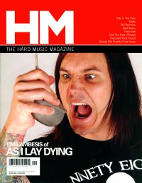

As I Lay Dying
May 2005 HM |
 September 2007 HM |
 May 2010 HM |
 July 2012 HM |
Media coverage:
- Sep 2001 in HM "Hardnews: As I Lay Dying", by Treble Bandoppler
- Sep 2002 in HM "As I Lay Dying"
- Jul 2003 in HM "Hardnews: New Release on Metal Blade", by Ashlee Allen
- Mar 2004 in HM "Live Report: As I Lay Dying with Sworn Enemy, Hisma, & With Honor", by Sean Michael Coale
- May 2004 in HM "Poster: As I Lay Dying"
- Sep 2004 in HM "Live Report: Cornerstone, The Alarm, Sleeping at Last, Norma Jean, As I Lay Dying", by Doug Van Pelt
- May 2005 in HM "Metal Over Tokyo"
- May 2006 in HM "Hardnews: Quick & Concise: As I Lay Dying"
- Win 2006 in Uprise Zine "Interview: As I Lay Dying"
- May 2007 in CCM "Salt and Light In A Gray World: As I Lay Dying", by John J. Thompson
- Aug 2007 in CCM "New Noise: As I Lay Dying", by Andrew Schwab
- Sep 2007 in HM "Dreams on a Collision Course", by Doug Van Pelt
- Nov 2007 in CCM "As I Lay Dying", by Andrew Schwab
- Mar 2008 in HM "As I Lay Dying"
- Mar 2008 in HM "Live Report: January 15", by Doug Van Pelt
- Jan 2009 in HM "Poster: As I Lay Dying"
- Jan 2010 in HM "Hardnews: Quick & Concise: As I Lay Dying In Studio"
- May 2010 in HM "As I Lay Dying", by Doug Van Pelt
- Jul 2010 in HM "Live Report: The Powerless Rise Tour", by Jeff Cunningham
- Jan 2011 in Heaven's Metal "Metal Tracks: Concert Review: The National, Richmond, VA, May 6th, 2010", by Jeff McCormack
- Dec 2011 in HM "As I Lay Dying", by Doug Van Pelt
- Jul 2012 in HM "As I Lay Dying", by Charlie Steffens
- Aug 2012 in HM "Poster: As I Lay Dying"
- Sep 2012 in HM "As I Lay Dying", by Seth Hecox
- Jul 2013 in Relevant "The Drop: As I Lay Dying Singer Arrested in Murder Plot"
- Aug 2014 in HM "Our War", by Collin Simula
- May 2015 in HM "From the HM Vault: As I Lay Dying in May / Jun #143"
Albums & reviews:
2002: As I Lay Dying / American Tragedy with American Tragedy
2007: An Ocean Between Us
- Sep 2007 in HM, by David Stagg
- 2007 in Christian Rock Report, by Daryl Ann Lowry
- Oct 2007 in CCM, by Doug Van Pelt
- Fall 2007 in Uprise Zine, by Daniel Kriepe
- Nov 2007 in YouthWorker, by Doug Van Pelt
2009: This Is Who We Are
- Jun 2009 in Heaven's Metal, by Doug Van Pelt
- Jul 2009 in HM, by Doug Van Pelt
2010: The Powerless Rise
- Jun 2010 in Heaven's Metal, by Jeff McCormack
- Jul 2010 in HM, by David Stagg
2019: Shaped by Fire
Award Summary (Nominations / Wins)
Grammy Awards- 2007 Grammy Awards
- Best Metal Performance: "Nothing Left"
Books about As I Lay Dying
- "As I Lay Dying" in The Encyclopedia of Contemporary Christian Music (Mark Allan Powell, 2002).
© 2011 CMnexus. Last updated May 2025. Contact: editor -AT- cmnexus -DØT- org